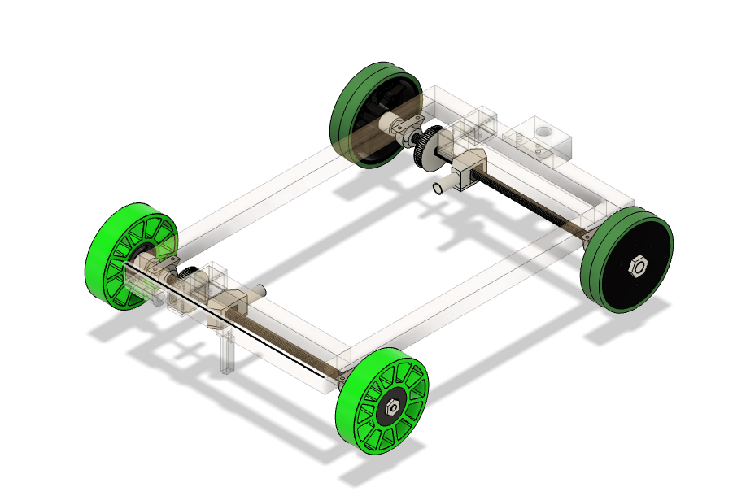

For the Science Olympiad—Gravity Vehicle event, I designed both the launch mechanism and vehicle
for the event. Using my skills with CAD, mechanical designs, and additive manufacturing (3D printing),
I was able to design and create a competitive vehicle.
The Process
Designed what the vehicle needs and the best way to incorporate it's main functionality (to stop
at a specified distance as closely as possible without any assistance from electronics nor any
outside influence). It was at this stage I was able to develop a rough idea of how the mechanism should
work.
3D designed the final iteration of the vehicle on CAD. Many components, especially the complex geometrically
shaped custom parts, were designed to be manufactured with FDM 3D printers, while the rest of the parts were
either made with wood (due to its great specific strength) or parts found online (e.g. metal parts, drive
belts, and rubber wheels).
Tuned the gravity vehicle to keep it on a strength path while also tuning the braking system to minimize the
effect of the jerk (when the vehicle stops, because it uses a wingnut and a threaded rod, it will lock the wheels
put almost instantaneously, causing the vehicle to experience jerk and lose traction).
The Braking System

Braking System (Highlighted)
The method of braking on the vehicle is a system of threaded rods and wingnuts. Both the front and rear axle
gets a pair of threaded rods and wingnuts synced with a GT2 timing belt. This ensures that all four wheels lock up
after it locks itself up. The distance it travels is dictated by the following equation: (circumference of the wheel * number of rotations
unwinding from locked position).
Computer Animation of how the braking system works
The Frame
The Frame (Highlighted)
In order to save weight to meet the weight limit while still making a rigid frame, wood was used to solve
both of these problems.
Scrambler Vehicle
For the 2022-2023 year, Science Olympiad has substituted Gravity Vehicle with Scrambler, an event
that has the same premise as Gravity Vehicle but with a twist. Instead of getting as close to a certain
point as possible, vehicles now must get as close to a wall as possible without crushing
the egg mounted on the front.
The Base (Highlighted)
Skills and Tools Used
Fusion 360: CAD Software
Sovol SV01 (Original) 3D Printer
A direct-drive extruder printer with a glass bed surface